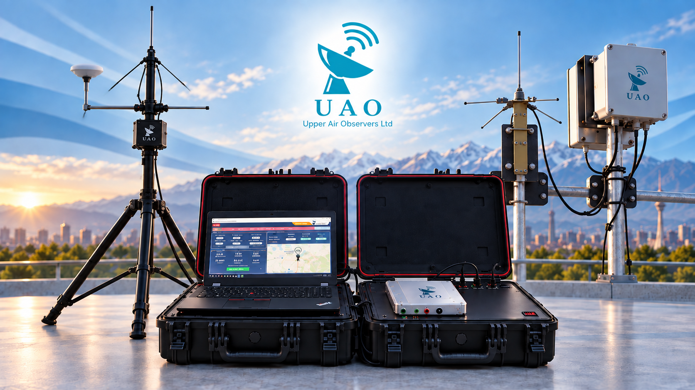

01
AIRBORNE INSTRUMENT
DigiSonde® Radiosonde
Balloon-borne PTU and GNSS telemetry for building a vertical atmospheric profile during ascent.
Open page →UPPER-AIR SOUNDING SYSTEMS
A complete upper-air observation workflow built around the DigiSonde radiosonde, field-ready receiving hardware and DigiMon ground-station software.
ONE SOUNDING CHAIN
The DigiSonde measures atmospheric parameters aloft and sends telemetry by radio. The ground station receives the downlink and DigiMon supports the operational sounding workflow, from a new sounding through profile comparison and TEMP generation.
AIRBORNE INSTRUMENT
Balloon-borne PTU and GNSS telemetry for building a vertical atmospheric profile during ascent.
Open page →
FIELD HARDWARE
Receiving antennas, station electronics and portable field hardware for real-time radiosonde telemetry reception.
Open page →
OPERATIONS & DATA
Sounding control, ground check, TEMP generation, ascent comparison and profile comparison in one operational interface.
Open page →MEASUREMENT FLOW
APPLICATION AREAS
The supplied UAO catalogue identifies meteorology, transportation and energy as application areas, with sounding data supporting organizations such as meteorological institutes, airports and airlines, transport authorities and renewable-energy operators.
Vertical atmospheric observations for operational analysis and forecasting workflows.
Upper-air information relevant to aviation and other weather-sensitive transport operations.
Atmospheric observations for weather-sensitive energy and renewable-energy activities.
DOCUMENTATION
The documents below are the supplied Upper Air Observers catalogues used as the technical source for this product introduction.
UPPER AIR OBSERVERS
For DigiSonde radiosondes, ground-station hardware, DigiMon software or technical cooperation, contact Upper Air Observers.